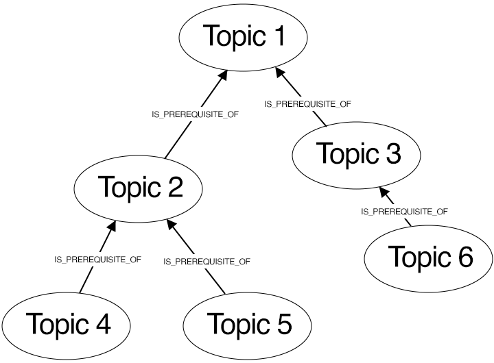
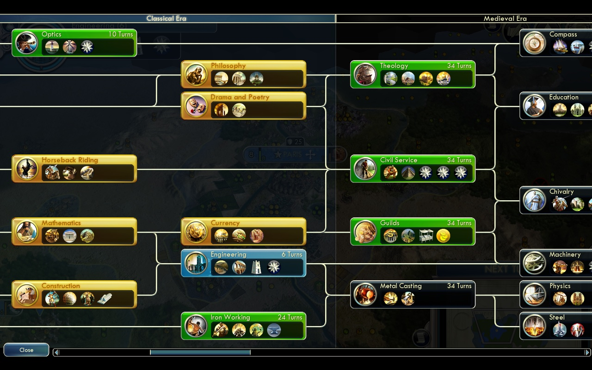
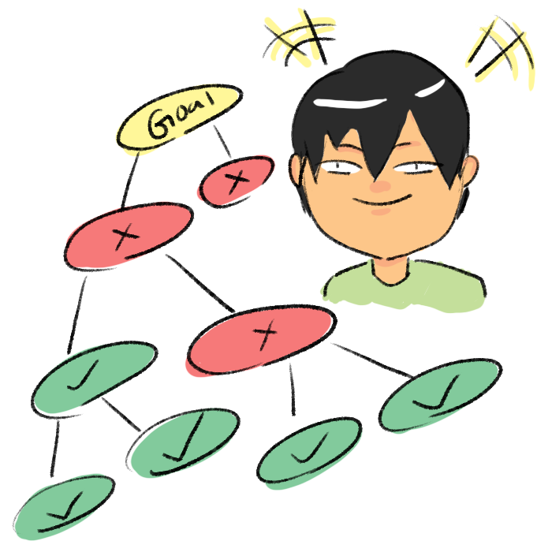
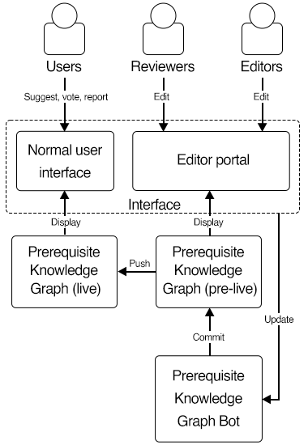
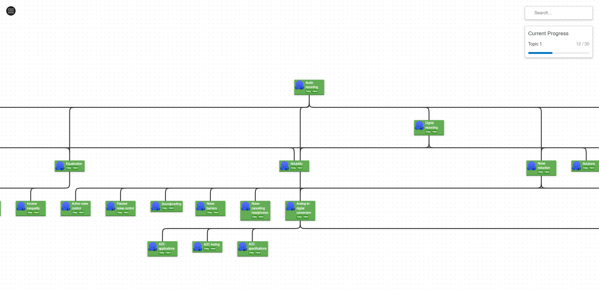

It's often a struggle to learn complex topics, especially when the subject is vast and you're unsure where to start. For example, let’s imagine you are trying to learn calculus, you may need to first understand algebra and trigonometry. And even before that, you need to master basic artihmetic and properties of number and vice versa. Wouldn’t it be handy if there is a graph that outlines the order in which you need to learn a topic? It connects different pieces of knowledge together and shows you which things you need to know before you can understand other, more complex topics.
The dilemma described above is what a prerequisite knowledge graph aim to solve. A Prerequisite Knowledge Graph is a graphical representation that visually illustrates and maps out the required prior knowledge that are needed to understand or learn a new topic or subject. It charts out the smaller, more manageable topics you should master first, creating a kind of learning roadmap.
The graph is structured with nodes and edges. Nodes represent the concepts or topics, and edges indicate the prerequisite relationships between them. The direction of the edges usually points from the prerequisite to the topic it's a prerequisite for (See Fig. 1). This helps in identifying learning paths and in creating curriculum structures. The prerequisite knowledge graph would represent these relationships visually, showing that algebra and trigonometry are required before understanding calculus in the example give above.
 Fig.1 Abstract of the Prerequisite Knowledge Graph, which all topics are connected sequantially to determine the order of prerequisites for learning ‘Topic 1’.One can think of Prerequisite Knowledge Graph like a technology or research tree in strategy games (Fig. 2), represents a well-structured, hierarchical visual representation of knowledges. Just as a technology tree outlines the possible upgrades a player can unlock to progress their faction, the Prerequisite Knowledge Graph maps out the sequences of knowledge one can acquire. However, instead of upgrades, each node signifies a unique piece of knowledge.
 Fig.2 A tech tree from the game Civilization V. Each technology (node) unlocks certain buildings, units or other advancements in game.So, if you're diving into something like programming, the prerequisite knowledge graph might guide you to start with basic concepts like variables and loops. After that, it might guide you to functions, and then maybe to object-oriented programming. Each step builds on the one before, leading you through the learning process in a structured, less overwhelming way. It can make complex topics way less scary and a lot more manageable!
 Fig.3 This is me who can’t wait to use the graph itself for self-improvement.I believe this is a common idea and I am definitely not the first one to come up with it. However, it emerged from a personal experience while working on my master's thesis project. Although my major was in machine learning, the thesis required me to delve into the topics of Active Brownian particles and Thermodynamics, areas in which I had limited experience. As a result, before starting the project, I had to dedicate a significant amount of time to learning these fields. This process proved to be challenging as I did not know where to start, and my lack of background knowledge made it difficult to discern what needed to be learned and what was already familiar to me.
This experience led me to contemplate the potential benefits of a comprehensive table of content that could guide learners in navigating new fields of knowledge. It was this idea that ultimately inspired me to create a Prerequisite Knowledge Graph that encompasses all human knowledge arranged in sequential order according to prerequisites, providing a structured and accessible roadmap for learning any subject.
Such an ambitious project would be difficult if not impossible to make, many topics and their relationships need to be included for the graph to be comprehensive (For example, the number of english articles on Wikipedia has exceed 6 millions!). That is also part of the reasons why I have only started this now after graduating from my Master degree. However, with the recent advancement from large language model, data can be easily created and curated. The prerequisite knowledge graph, vast in scope, can be initiated using a large language model and subsequently refined through human feedback. This method provides a solid anchor for the project, obviating the need to commence from a blank slate and thus significantly reducing the project's complexity.
Having said that, I initiated the process of constructing the knowledge graph, meticulously accumulating topics through the use of the ChatGPT 3.5 API. To date, the existing database encompasses a substantial number of 97,872 topics, complemented by 395,133 interconnections. However, it's important to note that the accuracy of the prerequisite relationships currently presents a degree of inconsistency subjectively (If not terrible!), necessitating further validation and refinement from human feedback. Additionally, I've developed a straightforward, cyclical update system designed to continually update and refine the prerequisite knowledge graph (Fig. 4).
 Fig.4 This diagram outlines the workflow for updating the prerequisite knowledge graph. Users can view, propose new connections or topics, vote, and report inaccuracies in the knowledge graph via the interface. Reviewers and editors can directly modify the graph through the editor portal, with the editors having the final say on changes. A bot will then validate and commit the changes to a pre-live version of the graph. The pre-live graph is then pushed to live at the start of each month.I began developing the prerequisite knowledge graph and web interface in late March. Once these initial stages are complete, I wish we can build a community that will help improve, provide feedback, and oversee the growth of this knowledge graph, ensuring its relevance and accuracy. I am excited to see how this project can potentially encapsulate all human knowledge, offering a structured and user-friendly learning roadmap for any subject to enhance the modern education system. Ideally, I will release more development blogs (I wish!) to keep everyone updated on the progress.
 Fig.5 Work in progress of the visualization of the Prerequisite Knowledge Graph.